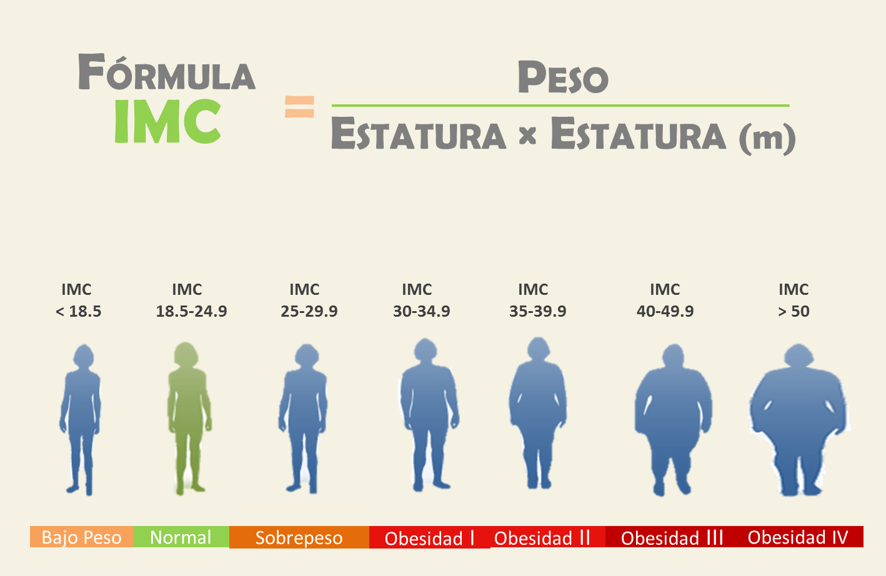

El sobrepeso puede causar la elevación de la concentración de colesterol total y de la presión arterial, y aumentar el riesgo de sufrir la enfermedad arterial coronaria. La obesidad aumenta las probabilidades de que se presenten otros factores de riesgo cardiovascular, en especial, presión arterial alta, colesterol elevado y diabetes.
